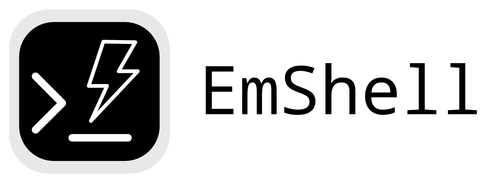

This is a (very rough) demo of a multilayered project called Emscripten Shell (EmShell for short)
Currently, the project encompasses three different levels of usage (which really should be three separate projects):
<x-term> element. python and pip commands, using the <py-xterm> element<py-xterm> element to a page using PyScript.As my primary pursuit is PyScript, this has full pyscript integration. Trying typing python and using display("Hello world", target="target") in the included REPL - you'll see that the in-terminal REPL has full PyScript functionality.
This project is in such early days, I hesitate to even call it an Alpha version. The shell is really more a series of hard-coded commands - things like line history, piping and redirect, variable expansion, arrow keys... none of that's here. There's also some slight weirdness going on with the REPL and imports... not sure what's happening there.
In the long term, I think it would be interesting to try compiling an existing POSIX shell like mrsh with Emscripten and figuring out how to integrate that with other Emscripten-built programs.
See the usage section on GitHub if you want to try out this early version.